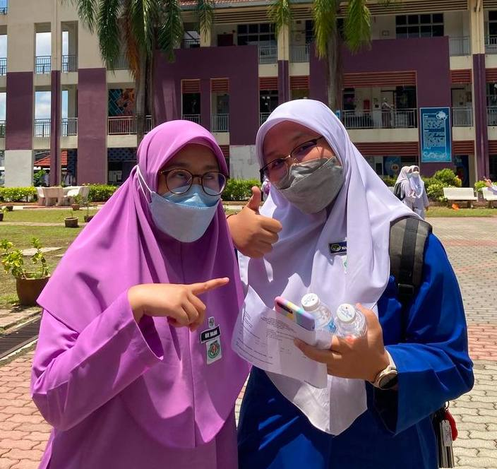
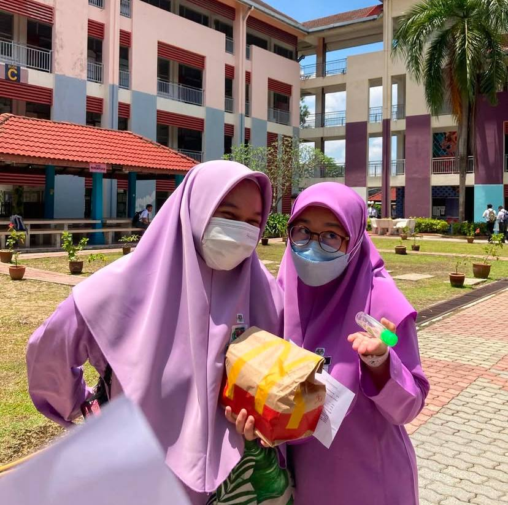

Schoolmates 📚
| Category | Details |
|---|---|
| Pictures of Schoolmates |

This is a picture of me with my amazing schoolmate and best friend, Fatin. We've been through so much together since 2017, and she’s been a constant source of support and laughter in my life. Fatin is the definition of loyalty, always there when I need her, whether it's for a shoulder to lean on or just to share a laugh. Our friendship is built on trust, shared memories, and the kind of bond that only grows stronger with time. She’s truly one of a kind!

This is one of my schoolmates, a friend I’ve had the privilege of keeping in touch with since I was 15 years old. Over the years, we’ve shared countless moment, from laughter that never seemed to end to tears that we wiped away together. Our friendship has been through it all, and it’s those unforgettable memories that have made our bond so strong. We’ve grown up side by side, and I’m grateful for every moment we’ve shared.

This is my dear friend Aini, someone who has been a guiding light in my life since we first became friends. Aini has always been there to help me overcome my fears and lift my spirits, even when my dreams seemed too big or impossible. Her unwavering belief in me has meant the world. We may not get to see or talk to each other as much lately, and I really miss those deep conversations and the comfort of her support. No matter the distance, I know our bond will always stay strong. |
| Video of Schoolmates |
Here’s a fun moment with my schoolmates right after art class and it's one of those carefree times that made the school day unforgettable. We spent so many hours together during those high-pressure days, especially around the time of the SPM exams. Despite the stress and late-night study sessions, we always found ways to laugh, support each other, and make lasting memories. Those were the moments that helped me get through it all, and they remind me of how lucky I was to have such an amazing group of friends by my side. Secondary school may be behind us now, but those memories still bring a smile to my face every time I think about them. |